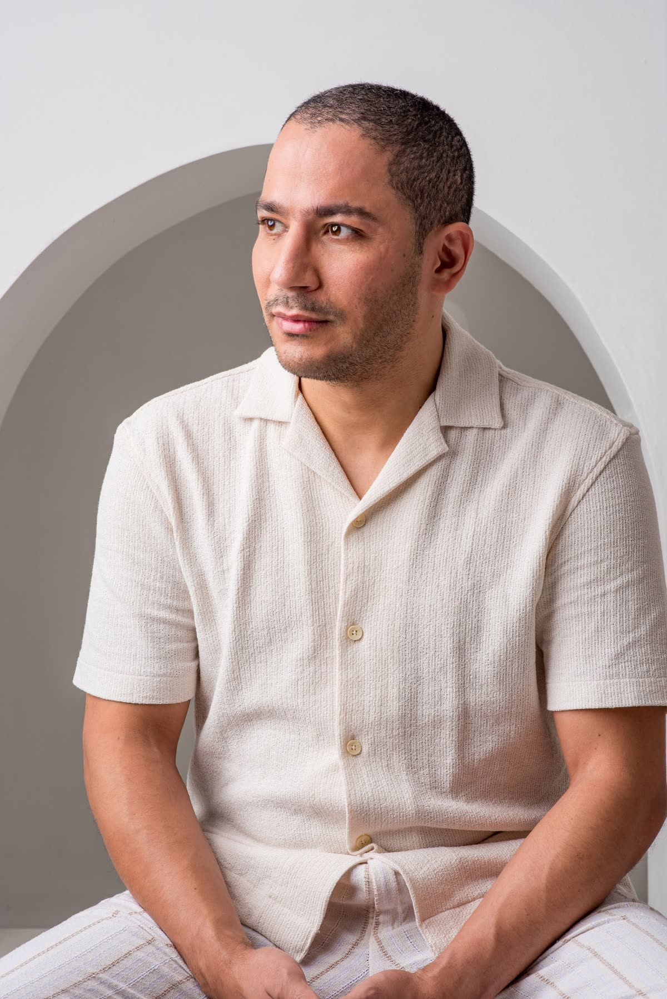
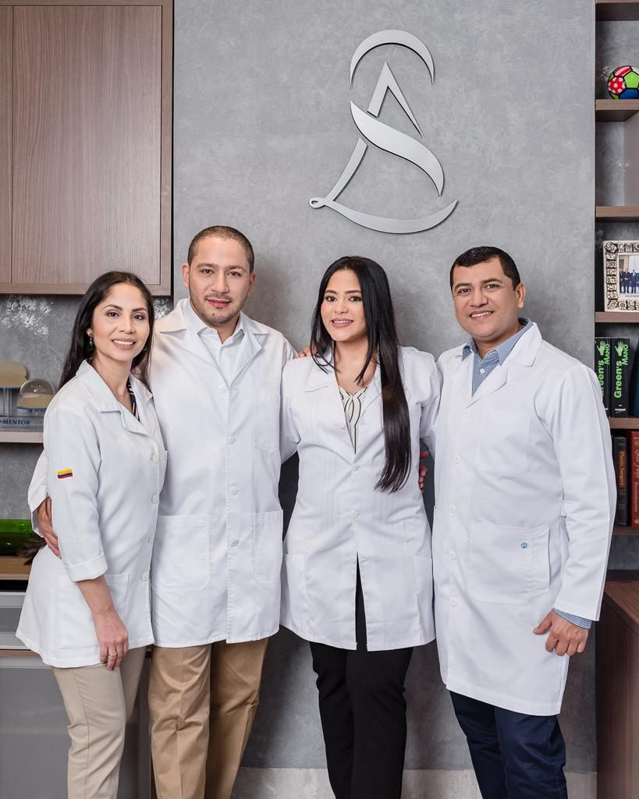
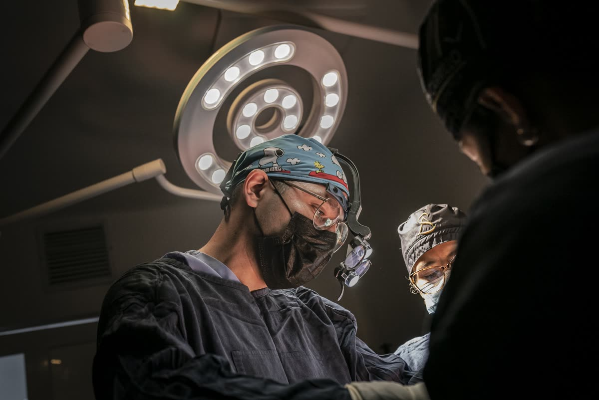
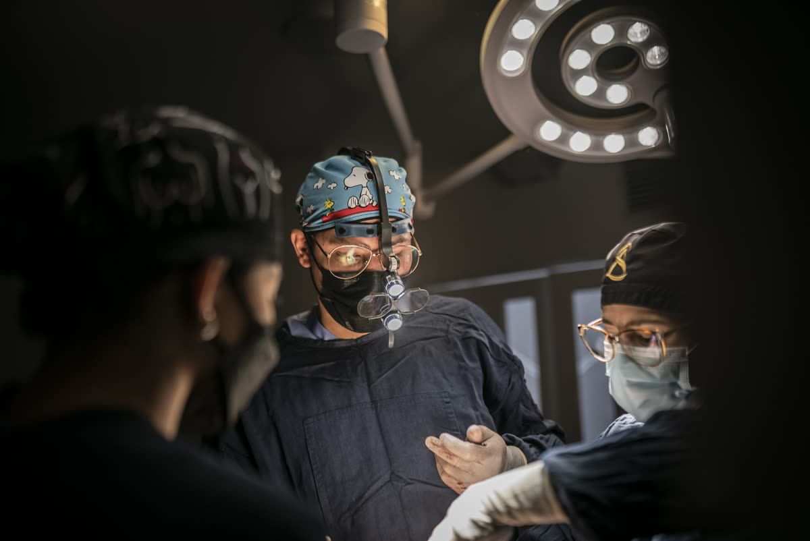
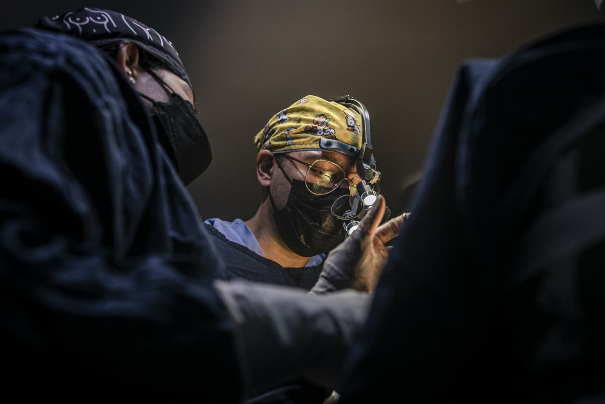
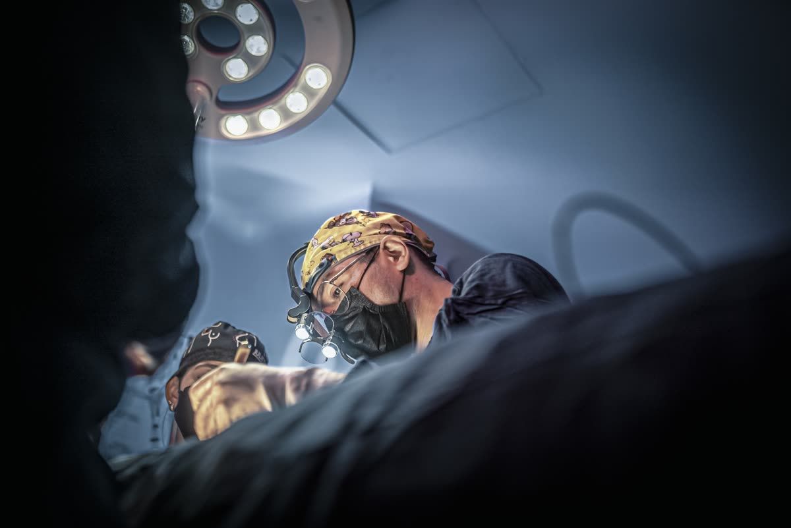

Cirujano plástico, estético y reconstructivo
Especialista de la Universidad Nacional de Colombia, docente de posgrado en la Universidad Simón Bolívar y miembro de la SCCP y la FILACP.
Dr. Luis Alonso
Cirujano plástico
Médico graduado de la Universidad de Cartagena y especialista en Cirugía Plástica, Estética y Reconstructiva de la Universidad Nacional de Colombia, con una trayectoria enfocada en la seguridad del paciente, la precisión quirúrgica y los resultados naturales.
Mantiene una actualización constante en técnicas y avances científicos para ofrecer procedimientos respaldados por los más altos estándares de calidad.
Actualmente es docente de posgrado en la Especialización en Cirugía Plástica de la Universidad Simón Bolívar, donde contribuye a la formación de nuevos especialistas.
Miembro de sociedades científicas de cirugía plástica:

Mi práctica se fundamenta en principios que guían cada decisión clínica y cada procedimiento.
La confianza que depositas en mí la respondo con ética, dedicación y un compromiso genuino con tu bienestar integral.
Protocolos rigurosos y tecnología de vanguardia para garantizar tu bienestar en cada etapa.
Realzamos tu belleza sin perder tu esencia, con armonía y proporción.
Acompañamiento cercano, escuchando tus necesidades y expectativas reales.
Formación continua y técnica precisa en cada procedimiento que realizamos.
Cada procedimiento es el resultado de un trabajo coordinado entre especialistas comprometidos con tu seguridad, tu bienestar y resultados que trascienden.









Prácticas hospitalarias rigurosas, equipo de anestesia certificado y trazabilidad completa de cada procedimiento quirúrgico.
Planeación milimétrica de cada procedimiento. La belleza es consecuencia de la exactitud, no del exceso.
El objetivo nunca es cambiar su esencia. Es realzar su belleza con equilibrio, naturalidad y precisión.
Cada procedimiento es el resultado de un trabajo coordinado entre especialistas comprometidos con tu seguridad, tu bienestar y resultados que trascienden.
Especialista de la Universidad Nacional de Colombia, docente de posgrado en la Universidad Simón Bolívar y miembro de la SCCP y la FILACP.

Coordina el cuidado de cada paciente antes, durante y después de la cirugía, con protocolos hospitalarios rigurosos y trazabilidad completa.

Parte del equipo de anestesia certificado que vela por tu seguridad durante todo el procedimiento quirúrgico.

Acompaña la valoración, el plan quirúrgico y los controles postoperatorios, resolviendo tus dudas en cada paso.

Prepara el quirófano y el instrumental para que cada cirugía se realice con precisión y bajo los más altos estándares.

Tu primer contacto: agenda tu valoración y coordina vuelos, hospedaje y traslados si vienes de otra ciudad o país.

Acompaña tu recuperación con tratamientos post operatorios y aparatología para favorecer resultados óptimos.
Pasa el mouse o toca cada foto para conocer a quien te acompaña